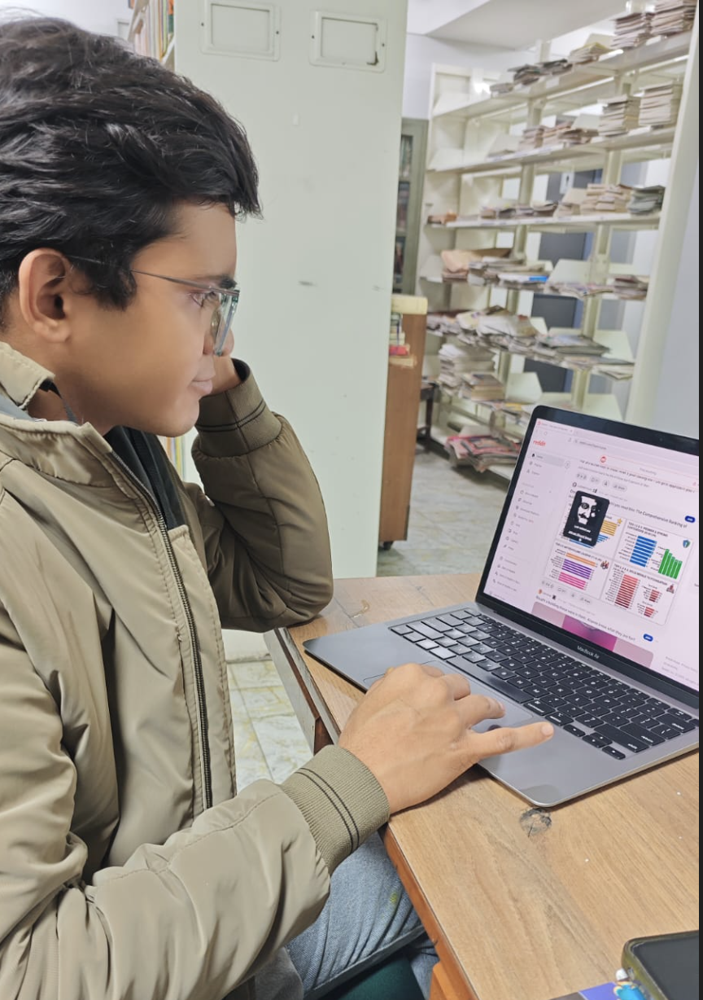
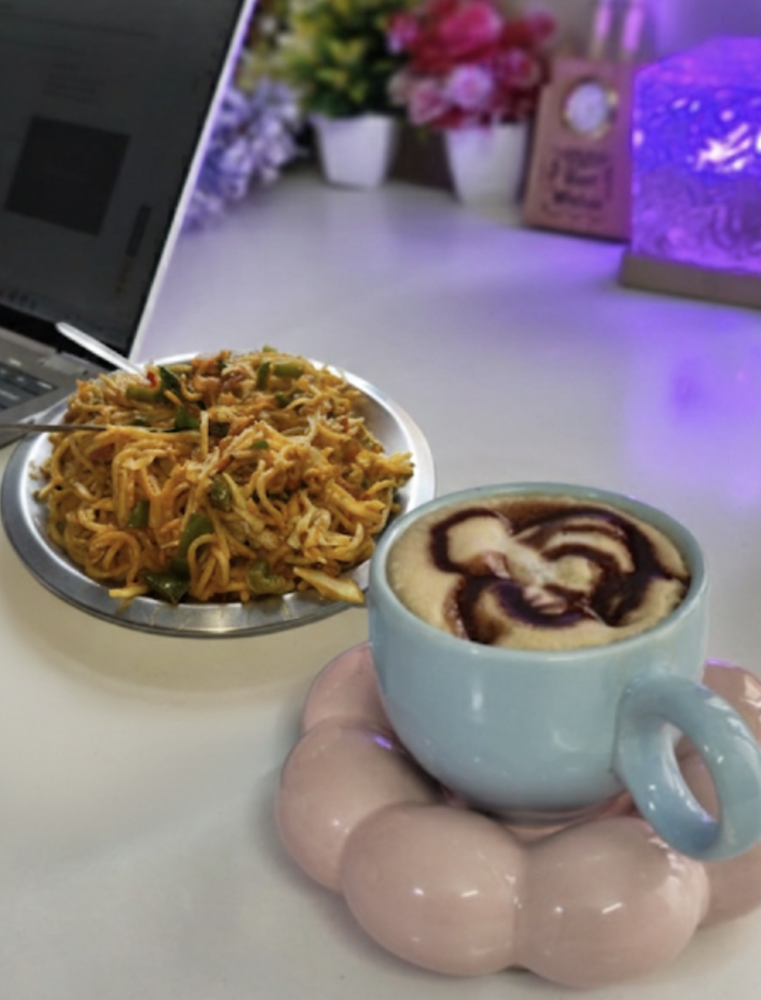
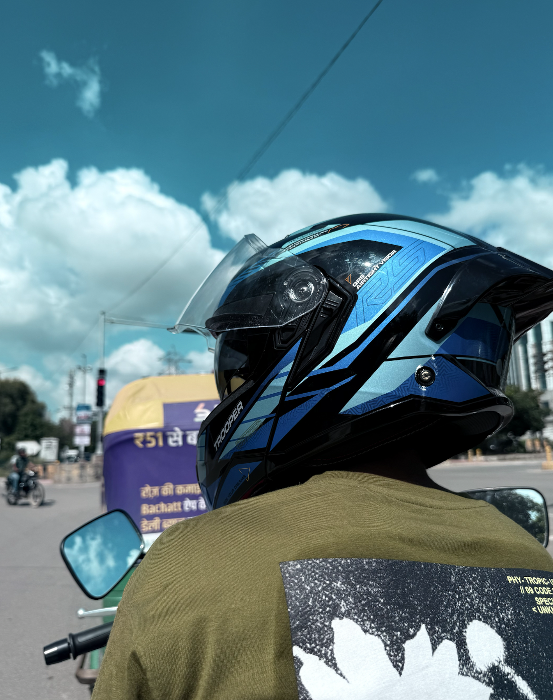

I am a Bachelor of Computer Applications (BCA) graduate from Bhai Parmanand DSEU with a strong interest in
web development, backend technologies, and building practical digital solutions. Alongside my technical
journey, I have actively taken up leadership roles and responsibilities that shaped my communication,
planning, and problem-solving abilities.
Over the last three years, I have been deeply involved in student-led initiatives, serving in multiple
positions including President of the Literary Society, Placement Cell Coordinator, and mentor for the Sports
Club. I have organized large-scale university events, industry webinars, and academic seminars, and worked
closely with teams and professionals to ensure successful execution.
I believe in learning by doing. Through projects, virtual internships, and certifications, I continuously
work on improving my technical foundation while maintaining a strong focus on teamwork, leadership, and
real-world impact.
Education
Bachelor of Computer Applications (BCA)
Bhai Parmanand DSEU (Delhi Skill and Entrepreneurship University), 2022 – Present
CGPA: 8.3/10

Exploring the internet and learning new things

Cooking as a creative outlet

Motorcycle riding and road exploration
Achievements
Served as President of the Literary Society, leading inter-college events, debates, and creative initiatives.
Appointed as the Department Placement Coordinator, coordinating webinars, company outreach, and student engagement.
Led a team of 12–15 members to collect and organize company data for placement processes.
Organized the official College Orientation Program and received a Letter of Recommendation from Right Side Story.
Served as a Mentor in the Sports Club, helping organize inter-college sports activities and events.
Coordinated major events including Amogh 2K25, the university’s technical & cultural festival.
Organized inter-college competitive events such as debate competitions and web designing contests.
Volunteered at a prestigious event hosted at IIT Delhi, contributing to technical and event operations.
Secured 1st place in Tug of War during college sports day.
Letter of Recommendation
I received a formal Letter of Recommendation from Right Side Story for successfully organizing the college orientation program as the Placement Coordinator. This recognition highlighted my leadership, planning, and event execution abilities.